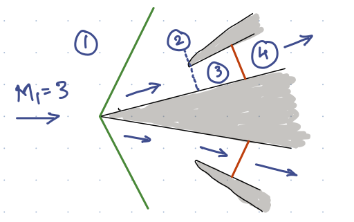

Q: Temperature is a path variable.
True
False
Q: A non-adiabatic process can be isentropic.
True
False
Q: Density is an intensive property.
True
False
Q: Specific volume is not an extensive property.
True
False
Q: An equilibrium state of a gas can be characterised by how many intensive properties? Note here that we are only interested in the intensive properties of the gas.
Q: The specific internal energy of an isolated system is always constant.
True
False
Q: The SI unit of \(R\) (in \(pv = RT\)) is
J/(kilomole K)
J/(Kg K)
J/(kilomole C)
J/(Kg C)
Q: Given that the ideal gas law for Hydrogen is expressed as \(pv = RT\) and also \(p\hat{v}=\hat{R}T\). Here \(\hat{v}\) is specifc volume of air per mole and \(v\) is the specific volume per mass. Then \({R}/{\hat{R}} =\)
Q: Which thermodynamic variable can used to ascertain if two systems are in mechanical equilibrium?
Pressure
Temperature
Force
Specific Volume
Q: Specific gas constant for air (being considered as a thermally perfect gas) is a function of temperature.
True
False
Q: Identify state variables in the following statement of the First law of thermodynamics \(de = dq - pdv\)
\(e\)
\(q\)
\(p\)
\(v\)
Q: An equilibrium state of a gas can be characterised by how many properties? Note here that we are interested in the intensive as well as extensive properties of the gas.
Q: Write down the equation defining the total enthalpy of a system?
Q: List the three types of equilibria that two systems have to be in order for them to be in thermodynamic equilibrium.
Q: State true of false with one line explanation. Specific enthalpy of an isothermal system is constant.
where, \(\alpha_i\) are integer values. Starting from the basic conservation laws, find all the \(\alpha_i\).
Q: The total pressure just outside the exit of an underexpanded flow is higher than the overexpanded flow. True or False. Please give explanation. Answer without explanation will not be graded. Q: Starting from the basic conservation laws, derive the speed of a moving shock in terms of \(a_1\), \(p_1\), \(p_2\) and \(\gamma\). Q: Explain in brief, what is a Mach reflection? Draw a representative diagram. Your explanation should clearly point out the circumstances under which Mach reflection will happen. Q: Air is coming at a spike inlet of a supersonic engine with \(M_1 = 3.0\). It is given that \(p_1 = 50~kPa\), \(T_1 = 260~K\), \(A_2 = 0.1~m^2\) and \(A_3 = A_4 = 0.12~m^2\). Calculate \(\frac{p_{0_4}}{p_{0_3}}\) and massflow rate in region 4. Green lines in the diagram show attached oblique shocks and the red line shows a normal shock. The spike angle is 20 degrees. (Keith pg. 259)
Q: Consider a CD nozzle with section 1 in the converging section and section 2 in the divergent section. The back pressure is such that the nozzle is choked and expands isentropically in the divergent part. Represent the section 1 and 2 on the Rayleigh diagram ( h-s diagram). You should mark the states 1 and 2 along with the total states \(0_1\) and \(0_2\). Clearly mark \(h_{0_1}\), \(h_{0_2}\), \(s_1\), \(s_2\), \(p_{0_1}\), \(p_{0_2}\), \(p_1\) and \(p_2\). Q: The total pressure just outside the exit of an underexpanded flow is higher than the overexpanded flow. True or False. Please give explanation. Answer without explanation will not be graded. Q: Starting from the basic conservation laws, derive the speed of a moving shock in terms of \(a_1\), \(p_1\), \(p_2\) and \(\gamma\). Q: Explain in brief, what is a Mach reflection? Draw a representative diagram. Your explanation should clearly point out the circumstances under which Mach reflection will happen.